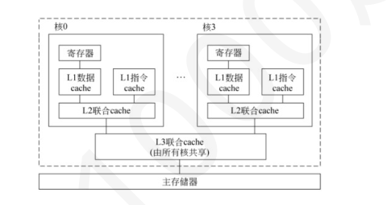
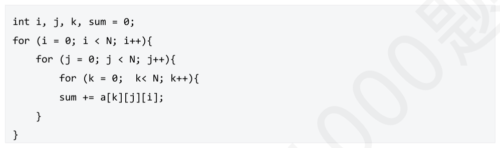
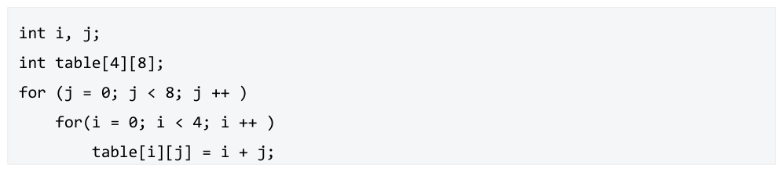
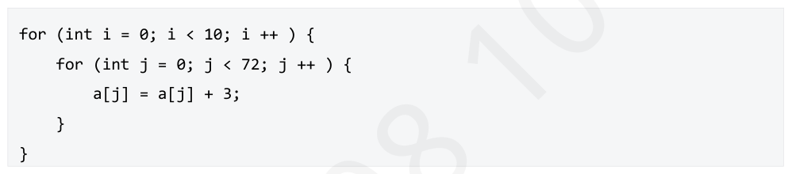

第 31 题
假定主存地址空间大小为1024MB，按字节编址，每次读写操作最多可以一次存取32 位。不考虑其他因素，则存储器地址寄存器MAR 和存储器数据寄存器MDR 的位数至少应分别为（ ）
- A．30 和8
- B．30 和32
- C．28 和8
- D．28 和32
答案与解析
答案：B
主存地址空间大小为1024MB ，按字节编址，说明主存地址位数为log(1024MB/1B)=30，因此，MAR的位数至少应为30。因为每次读写操作最多可以一次存取32位，所以MDR的位数至少应为32（与数据线宽度对齐）。答案为选项B。
第 32 题
假定DDR3 SDRAM 芯片内部核心频率为133.25MHz，与之相连的存储器总线每次传输8B，则下面有关叙述中，错误的是（）。
- A．芯片内部I/O 缓冲采用8 位预取技术
- B．存储器总线每秒传1066M 次数据
- C．存储器总线的时钟频率为1066MHz
- D．存储器总线的带宽大约为8.5GB/s
答案与解析
答案：C
因为是DDR3SDRAM芯片，所以芯片内部I/O缓冲采用8位预取技术。因此，存储器总线每秒传送数据的次数为133.25M×8=1066M，其带宽为1066M×8B≈8.5GB/S。因为存储器总线每个时钟周期传送两次数据，所以，其时钟频率为1066M/2=533MHz。综上所述，答案为选项C。
第 33 题
模块存储器采用低位交叉编址方式的主要目的是（ ）。
- A．提高存储器的容量
- B．降低存储器的成本
- C．提高存储器的访问速度
- D．增加存储器的可靠性
答案与解析
答案：C
多模块存储器低位交叉编址后，多个存储模块可以并行工作，CPU可以连续访问不同模块中的数据，在一个存储周期内可以读取多个数据，提高了存储器的访问速度，C正确。
第 34 题
某计算机使用4 体低位交叉编址存储器，存取周期T = 80ns，总线启动访问间隔Δt = 20ns。在存储器总线上出现的主存地址（十进制）序列为8005，8006，8007，8008，8001，8002，8003，8004， 8000，则总存取时间是（ ）。（到最后一次存取的存取周期结束为止）
- A．240ns
- B．280ns
- C．300ns
- D．720ns
答案与解析
答案：C
根据访问地址求出访问存储体体号序列（地址% 4）：1，2，3，0，1，2，3， 0，0。可发现只有最后访问8004和8000时发生了体冲突，即：体1：0ns→80ns（首次启动）体2：20ns→100ns（间隔Δt）体3：40ns→120ns（间隔Δt）体0：60ns→140ns（间隔Δt）体1：80ns→160ns（距首次启动80ns，满足T）体2：100ns→180ns（距首次启动80ns）体3：120ns→200ns（距首次启动80ns）体0：140ns→220ns（距首次启动80ns）体0：220ns→300ns（距上一次体0启动140ns→220ns，间隔80ns）最后一个访问（第9个地址，体0）的完成时间为300 ns，C正确。
第 35 题
一个八体低位交叉存储器，每个存储体的容量为256M×64 位，若每个体的存储周期为80ns，那么该存储器能提供的最大带宽是（）
- A．426.67MB/s
- B．800MB/s
- C．213.33MB/s
- D．400MB/s
答案与解析
答案：B
八体低位交叉存储器最大带宽时即完全流水线化，一个周期可访问8 个存储体。每个存储体的容量为256M×64位，一个存储体一次传输64位数据即8B，带宽为8B×8/80ns= 800MB/s。
第 36 题
设存储器容量为512K 字，字长32 位，模块数=8，用交叉方式进行组织，支持突发传送。存储周期T=200ns 数据总线宽度为32 位，总线传送周期T=25ns（传输地址和数据都是1 个总线传输周 ）b/s期），则在突发传送模式下，该存储器的平均带宽是（
- A．60.3 ∗107
- B．64 ∗107
- C．46.5 ∗107
- D．32 ∗107
答案与解析
答案：A
交叉存储器连续读出8 个字的信息总量是：q=32 位×8=256 位交叉存储器连续读出8 个字所需的时间是：传一次地址+启动各个模块并准备数据+依次总线传输𝑡= 𝑇总线+ 𝑇𝑚+ (𝑚−1)𝜏+ 𝑇总线= 25 + 200 + 7 × 25 + 25 = 425𝑛𝑠交叉存储器带宽𝑊= 𝑞/𝑡= 256/(4.25 × 10−7) = 60.3 × 107(𝑏/𝑠)
第 37 题
假定采用多模块交叉存储器组织方式，存储器芯片和总线支持突发传送，CPU 通过存储器总线读取数据的过程为：发送首地址和读命令需1 个时钟周期，存储器准备第一个数据需8 个时钟周期，随后每个时钟周期总线上传送1 个数据，可连续传送8 个数据。若主存和cache 之间交换的主存块大小为64B，存储宽度和总线宽度都为8B，则cache 的一次缺失损失（缺失开销）至少为（ ）个时钟周期。
- A．33
- B．20
- C．17
- D．65
答案与解析
答案：C
一次缺失需要从主存读取一个主存块（64B)，每个突发传送总线事务可以读取8B*8，因此需要一个突发传送总线事务。每个突发传送总线事务所用时间为1+8+8=17 个时钟周期。
第 38 题
磁盘的平均存取时间包括（ ）。
- A．寻道时间和旋转延迟时间
- B．寻道时间和数据传输时间
- C．旋转延迟时间和数据传输时间
- D．寻道时间、旋转延迟时间和数据传输时间
答案与解析
答案：D
磁盘的平均存取时间是指从发出读写请求到数据开始传输或传输结束所需要的平均时间，包括寻道时间（磁头移动到目标磁道的时间）、旋转延迟时间（盘片旋转使目标扇区移动到磁头下方的时间）和数据传输时间（数据在磁盘和内存之间传输的时间），D正确。
第 39 题
固态硬盘（SSD）与传统机械硬盘（HDD）相比，优势不包括（ ）。
- A．读写速度快
- B．抗震性好
- C．容量更大
- D．工作时无噪音
答案与解析
答案：C
固态硬盘采用闪存芯片存储数据，没有机械部件，读写速度快，抗震性好，工作时无噪音；目前传统机械硬盘在大容量存储方面仍有一定优势，固态硬盘的容量并非普遍大于机械硬盘，A、B、D则都是SSD的优势，C错误。
第 40 题
固态硬盘采用的存储介质是（ ）。
- A．磁性材料
- B．半导体闪存芯片
- C．光盘片
- D．磁鼓
答案与解析
答案：B
固态硬盘（SSD）使用半导体闪存芯片作为存储介质，存储和读取数据；磁性材料用于传统的磁表面存储器如硬盘、磁带；光盘片是光盘的存储介质；磁鼓也是磁表面存储器，A、 C、D错误。
第 41 题
在下列关于固态硬盘SSD 的说法中，正确的是（ ）。
- A．固态硬盘属于磁表面存储器
- B．固态硬盘的闪存翻译层相当于磁盘中的磁盘控制器，起到地址转换的作用
- C．固态硬盘的随机读时延远低于常规硬盘，但随机写时延和常规硬盘的相差不大
- D．在对固态硬盘的某块写入信息时，不必按照块内页的顺序写入信息
答案与解析
答案：B
固态硬盘基于闪存技术，不属于磁表面存储器，选项A 错误。闪存翻译层可将CPU的逻辑磁盘块读/写请求转化为对底层SSD物理设备的读/写控制信号，选项B 正确。固态硬盘无论是读还是写，速度都远快于常规硬盘。只不过对于SSD，写比读要慢，因为涉及擦除和磨损均衡。选项C 错误。固态硬盘块内的页必须按顺序写入信息，选项D错误。
第 42 题
下列关于固态硬盘（SSD）的说法中，错误的是（ ）。
- A．固态硬盘不受震动和物理冲击的影响，更适合移动设备使用。
- B．固态硬盘的磨损均衡技术中，动态磨损均衡比静态磨损均衡技术更先进、表现更优秀。
- C．固态硬盘的数据存储于Flash 芯片之中。
- D．机械硬盘使用的硬盘调度算法不一定适用于固态硬盘。
答案与解析
答案：B
静态磨损均衡技术比动态更先进、更优秀； SSD损均衡技术大致分为两种： • 动态磨损均衡。写入数据时，优先选择擦除次数少的新闪存块。老的闪存块先歇一歇。 • 静态磨损均衡。这种技术更为先进，就算没有数据写入，SSD也会监测并自动进行数据分配，让老的闪存块承担以读为主的存储任务。同时让较新的闪存块腾出空间，以承担更多以写为主的存储任务。如此一来，各闪存块的寿命损耗就都差不多。
第 43 题
下列关于固态硬盘SSD 的说法中，正确的有（ ）
Ⅰ．固态硬盘是基于闪存技术的存储技术
Ⅱ．固态硬盘在写入前必须进行擦除
Ⅲ．固态硬盘的读写性能、使用寿命均优于机械硬盘
Ⅳ．固态硬盘写入时，总是要选择擦写次数少的存储块
- A．Ⅰ、Ⅱ
- B．Ⅰ、Ⅱ、Ⅲ
- C．Ⅰ、Ⅱ、Ⅳ
- D．Ⅱ、Ⅲ、Ⅳ
答案与解析
答案：A
Ⅰ正确，固态硬盘基于闪存技术。 Ⅱ正确，固态硬盘以页为读写单位，只有在一页所属的块整个被擦除后，才能对这一页进行写入。 Ⅲ错误，固态硬盘的读写性能优于机械硬盘，但是固态硬盘的NAND闪存中的块有擦写次数限制，其使用寿命一般短于机械硬盘。 Ⅳ错误，Ⅳ描述的是动态磨损均衡，而在静态磨损均衡中，会对数据块进行检测，尽可能保证各块写入和擦除均衡，并非是每次写入都选择长期存放数据而很少擦写的块。
第 44 题
下列关于固态硬盘（SSD）的叙述中，不正确的是（ ）。
- A．固态硬盘的读写是以页为单位的
- B．固态硬盘的擦除是以页为单位的
- C．固态硬盘的写入速度比读取速度慢很多
- D．固态硬盘的写入次数有限，引入磨损均衡可以延长使用寿命
答案与解析
答案：B
读写以页为单位，擦除以块为单位。随机写的速度比读慢，原因如下： • 只能写入被擦除的块，擦除块比访问块慢得多。 • 修改一个页中的部分数据，需要拷贝这个块中其他页到被擦除的块进行修改 • 磨损均衡动态磨损均衡：自动选磨损少的块写入，早期常使用动态方式，这种方式会导致冷数据块一直得不到擦除，各个块擦除并不均衡。冷数据：只读数据或者系统数据，修改很少的数据块静态磨损均衡：将冷数据块转移到擦除较多次的块（老块），现代多使用静态+动态磨损均衡结合的方式，增加了闪存的寿命。注意：闪存的存储介质是ROM，但是SSD里有闪存翻译层，其中地址映射表是由速度较快的DRAM 实现，所以SSD 可以说存储介质是ROM，但是不可以说只有ROM，内部还是有DRAM 的存在。
第 45 题
Cache 的基本原理是基于（ ）。
- A．数据的共享性原理
- B．程序的局部性原理
- C．数据的一致性原理
- D．程序的并发性原理
答案与解析
答案：B
Cache利用程序的局部性原理（时间局部性和空间局部性），将CPU近期可能访问到的数据从主存复制到Cache中，当CPU再次访问这些数据时，直接从Cache读取，提高访问速度，B正确。
第 46 题
下列关于cache 的描述中，正确的是（ ）
- A．cache 行越大越好，这样可以提高cache 命中率
- B．直接映射方式无需考虑替换方式
- C．cache 可以看作内存的扩充
- D．在多级cache 系统中，主存侧的cache 通常将指令和数据分开，用两个cache 存储
答案与解析
答案：B
A 错误，cache 行并不是越大越好，因为缺失时，从主存读一个数据更大的块需要消耗更多时间，其次，虽然增大cache 块可以更好利用空间局部性，但cache 行变大，容量不变的情况下，行数变少，因而要替换的可能性增加，命中的可能性不一定增加。 B 正确，直接映射方式下，一个给定的主存地址映射到固定的cache 行，若不命中，直接将该行数据替换，无需考虑替换算法。 C 错误，cache 仅仅是内存的拷贝，无法拓展不同的数据，所以无法扩充内存，扩充内存的方式一般指的是虚拟存储器。 D错误，CPU侧的cache 通常指令和数据分开，这样方便并行读取数据和指令 （流水线中），若缺失，再从靠近内存侧的cache 读入靠近CPU 侧的cache。

第 47 题
已知cache-主存系统效率为85%，平均访问时间为60ns，cache 比主存快4 倍，先访问cache，未命中再访问主存，则cache 命中率是（ ）。
- A．93.2%
- B．95%
- C．96.5%
- D．98%
答案与解析
答案：C
先访问cache，未命中访问主存Tc=Ta×e=60ns×0.85=51ns（cache存取周期） Tm=51×5=255ns（主存存取周期）因为Ta=Tc+（1-H）×Tm=51ns+（1-H）×255ns=60ns所以命中率H=246/255=96.5%，C正确。
第 48 题
已知cache 命中率H=0.98，主存周期是cache 的4 倍，主存存取周期为200ns，先访问cache，未命中再访问主存，则cache-主存的效率为（ ）。
- A．92%
- B．92.6%
- C．95.4%
- D．98%
答案与解析
答案：B
Tc=Tm/4=50ns平均访问时间Ta=Tc+（1-H）×Tm=50ns+（1-0.98）×200ns=54ns访问效率e=Tc/Ta=50ns/54ns×100%=92.6%，B正确。
第 49 题
对于下列代码，以下哪种改变使其具有更好的局部性（ ）

- A．将第2 行与第3 行互换
- B．将第2 行与第4 行互换
- C．将第5 行改为：sum += a[i] [k] [j] ;
- D．将第5 行改为：sum += a[j] [i] [k] ;
答案与解析
答案：B
最好的局部性即完全按地址存放顺序访问数组。B 改完后对数组a 的访问为顺序访问依次访问地址上连续的元素，故有更好的空间局部性。
第 50 题
一个计算机有cache、主存和用于虚拟存储的磁盘。若所访问的字在cache 中，则存取它只需20ns。若字在主存而不在cache 中，则需要60ns 将它装入cache，然后再从cache 存取。若字不在主存中，则需要12ns 将它由磁盘取来装入主存，再用60ns 将它复制到cache，最后从cache 存取。cache 命中率是0.9，主存命中率是0.6。那么此系统访问一个字的平均存取时间是（以ns 为单位）（ ）。
- A．18
- B．21.68
- C．22.8
- D．26.48
答案与解析
答案：D
因为cache命中率是0.9，所以访问90%的字的平均存取时间=20nsx0.9=18ns；又因为主存命中率是0.6，所以0.6×0.1的数据要从主存调入cache，然后再从cache存取，访问一个字的平均存取时间=0.6x0.1×（60ns+20ns）=4.8ns。0.4×0.1的数据要从磁盘调入主存，然后再调入cache，访问一个字的平均存取时间=0.4x0.1x（12ns+60ns+20ns）=3.68ns；此系统访问一个字的平均存取时间=18ns+4.8ns+3.68ns=26.48ns，D正确。
第 51 题
某计算机主存容量4GB，按字节编址。Cache 容量2MB，若采用直接映射方式，Cache 块大小64B，则主存地址划分中标记位长度是（ ）。
- A．9 位
- B．10 位
- C．11 位
- D．12 位
答案与解析
答案：C
Cache行数= 2MB/64B =215，块内偏移6位，行号15位，标记位= 32位地址-15-6 = 11位，C正确。
第 52 题
在Cache 和主存之间的映射方式中，若主存中的任意一块数据可以映射到Cache 的任意一块中，这种映射方式是（）。
- A．直接映射
- B．全相联映射
- C．组相联映射
- D．不存在这种映射
答案与解析
答案：B
全相联映射允许主存中的每一块数据映射到Cache的任何一块位置上，灵活性最高，但实现成本也高；直接映射中主存块只能映射到Cache的固定位置；组相联映射是将Cache和主存分组，主存块只能映射到Cache对应组的任意一块，故B正确，A、C、D错误。
第 53 题
某计算机的Cache 采用二路组相联映射方式，Cache 容量为32KB，主存容量为2GB，每个主存块大小为64 字节，按字节编址，则主存地址中组号字段的位数是（ ）。
- A．6
- B．7
- C．8
- D．9
答案与解析
答案：C
首先，计算Cache的组数，Cache容量为32KB =215字节，每个主存块大小为64字节=26字节，二路组相联意味着每组有2块，所以Cache组数=215÷2 × 26= 28。故组号字段的位数是8位，C正确。
第 54 题
一个32 位系统，系统中有一个数据容量为128B 的2 路组相连联映射cache，每个cache 块的大小为32B。int 数据类型的长度为4B。如下程序，假设table 数组的内存起始地址是0x0。 table 中元素的访问，cache 缺失率为（ ）

- A．1
- B．1/4
- C．1/8
- D．1/16
答案与解析
答案：C
一个cache 块可以容纳32/4=8 个int 元素，table 中元素的访问情况如下，m 表示miss，h 表示hit。 m h h h h h h hm h h h h h h hm h h h h h h hm h h h h h h hMiss rate = 1/8
第 55 题
某计算机主存容量4GB，按字节编址。Cache 采用二路组相联映射方式，共有1024 行，若主存地址中标记位字段长度为12，则Cache 块大小是（ ）。
- A．512B
- B．1KB
- C．2KB
- D．4KB
答案与解析
答案：C
计算机主存容量4GB，按字节编址，故主存地址共32位。二路组相联每组包含2行，Cache共有1024行，故组数为512组，组号字段共9位，标记位字段为12位，故块内偏移量字段共11位，Cache块大小为211= 2KB，C正确。
第 56 题
已按勘误修正
有如下c 语言程序段：数组a 中都是int 型数据，数组长度为72，每个int 型数据占4B，假定数组a 在主存中是从00000000H 开始连续存储，其中数据cache 采用4 路组相联，数据区大小为256B， cache 行（主存块）大小为16B，采用LRU 替换算法，该程序段执行前cache 为空，则该程序段执行过程中访问数组a 的cache 缺失率是（ ）

- A．7.5%
- B．25%
- C．12.5%
- D．15%
答案与解析
答案：A
cache数据部分一共256B，每个cache行是16B，共有16行，采用4路组相联，分为4组。每个int型数据是4B，即每个cache行里面可以存放4个int 型数据。数组在主存中的起始地址为00000000H；数组一共有72个int变量，那么数组对应了18个主存块，分别是0、1、2…17。程序执行前cache是空的，i的这层for循环持续了10次，cache采用的是LRU替换策略，分析可知数组所在的18个主存块映射到0、1、2、3组的规律如下： •0号cache组将映射0、4、8、12、16号主存块； 1号cache组将映射1、5、9、13、17号主存块； • • 2 号cache组将映射2、6、10、14号主存块； •3号cache组将映射3、7、11、15 号主存块。然后分析执行过程中数组访问缺失的情况。在第一轮中，对于72个数组元素的访问将落实到对应18个主存块的访问，以0号主存块的访问过程举例，里面存放了a[0]、a[1]、a[2]、a[3]这四个数组元素，首先遍历a[0]的时候发生cache缺失，此时将0号主存块调入0号cache组中，后续对于a[1]、a[2]、a[3]的访问将不会发生cache缺失了；同理类推，18个cache块都会发生一次cache缺失。最后，根据上面一段对于主存块映射cache组的规律以及LRU替换算法的特性可知，i=0 时，即第一轮结束的时候0、1、2、3组里面分别存放的是(4、8、12、16), (5、9、13、17), (2、6、10、14), (3、7、11、15)这些主存块。后续九轮里面，2和3号cache组里面的8个主存块因为没有发生cache替换的情况，所以这些都会cache命中的，只需要考虑0和1号cache组这些主存块的命中情况，分析可知，从第二轮开始，这两个cache组里面对应的主存块仍然会缺失，以0号cache组为例，当访问其中的4号主存块之时，0号cache组里面存放的刚好是0、8、12、16这四个主存块的副本；当访问其中的8号主存块之时，0号cache组里面存放的刚好是0、4、12、16这四个主存块的副本，所以第二轮里面仍然会发生cache缺失，缺失的来源就是0和1号cache组对应的十个主存块，即发生了10次缺失，后续第三轮~第十轮和第二轮的结果一样。计算：总的cache缺失次数为，18+10*9=108次；总的访问次数为10 *72 * 2=1440，注意这里每条C 语句会访问每个数组元素两次。那么总的缺失率为108/1440=7.5%。计算总的cache缺失次数，18+10*9=108次；总的访问次数为10*72*2=1440，注意这⾥每条C语句会访问每个数组元素两次。那么总的缺失率为108/1440=7.5%，A正确。
勘误修正：勘误：“后续第3轮~第9轮”应为“后续第3轮~第10轮”。
勘误：勘误：“后续第3轮~第9轮”应为“后续第3轮~第10轮”。
第 57 题
假定主存地址位数为32 位，按字节编址，主存和cache 之间采用直接映射方式，主存块大小为1 个字，每字32 位，写操作时采用回写方式，则能存放32K 字数据的cache 总容量至少应有（ ）位
- A．1504K
- B．1536K
- C．1568K
- D．1600K
答案与解析
答案：C
cache 行数为32K/1=32K 行，直接映射方式下，需要15 位来表示行号；主存块大小为32bit，按字节编址，块内地址计2 位；tag 位数=32-15-2=15bit，有效位和修改位（脏位）各1bit，所以cache 每行需要15+1+1+32=49bit，cache 总容量=49×32K=1568K。
第 58 题
已按勘误修正
假定某个计算机的内存地址空间为64M，按字节编址，其数据cache 有8 个cache 行，主存块块长64B，采用回写（Write Back）方式和随机替换策略，若cache 总容量为532B，则cache 最可能采 ），cache 中比较器的数量为（ 用的映射方式为（）。
- A．直接映射，1 个
- B．组相联映射，4 个
- C．组相连映射，2 个
- D．全相联映射，1 个
答案与解析
答案：C
内存地址空间为64M=2^26，物理地址为26位。按字节编址，主存块长64B，块内地址为6bit。Cache数据容量8×64B=512B，标记阵列容量为532-512=20B，一共8行，每行的标记信息一共20bit，回写方式需要1bit脏位，另外1bit有效位，因此tag位为20-1-1=18bit。因此可以知道组号位数为26-18-6=2bit，可知该Cache采用8/2^2=2路组相联。比较器数量为2。答案选C。
勘误：解析已按勘误替换
第 59 题
在指令存储器设置一个容量为1KB 的cache，采用4 路组相联，每块2 个字（字长16bit），按字节编址。其cache 中选出命中的行（如果存在）需要几个多路选择器以及每个多路选择器需要几位来控制（）
- A．1 个多路选择器，每个多路选择器需要4bit 用于控制
- B．4 个多路选择器，每个多路选择器需要2bit 用于控制
- C．1 个多路选择器，每个多路选择器需要2bit 用于控制
- D．4 个多路选择器，每个多路选择器需要4bit 用于控制
答案与解析
答案：C
由于cache采用4路组相联，所以cache中有4个比较器，比较后通过一个多路选择器选择出一个块，每组有四个块，所以用2bit控制多路选择。实现一个四路组相联的cache需要四个比较器和一个4选1的多路选择器来判断被选中的组中哪一个单元与标记匹配。
第 60 题
某32 位计算机的cache 容量为16KB，按字节编址，cache 行的大小为16B，若主存与cache 地址映像采用直接映像方式，则主存地址为0x1234E8F8 的单元装入cache 的地址是（ ）
- A．00010001001101
- B．11010011101000
- C．01000100011010
- D．10100011111000
答案与解析
答案：D
cache 地址总共为14 位，最后4 位是块内偏移量，所以和主存地址的最后4 位一样。由于采用直接映射，主存地址的最后14 位，就是对应在cache 的地址。